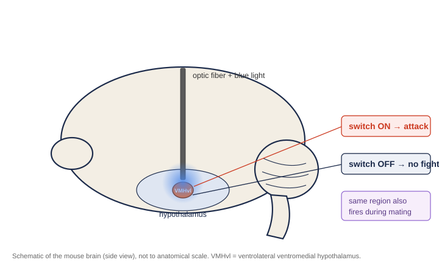

Scientists found an aggression switch in the mouse brain.
In a landmark 2011 study, switching on a pinhead of neurons made a male mouse attack almost anything in front of it. Switching it off called off the fight. And the same tiny spot turned out to hold the brain's mating neurons too.

Almost a century ago, the physiologist Walter Hess found that electrically stimulating part of a cat's hypothalamus could turn a calm animal into a hissing, attacking one. It was a startling result, part of a larger body of work on the brain's deep control centers that would earn Hess a Nobel Prize, but it left the hard questions open. Which exact cells were doing it? Were those cells actually needed for normal aggression, or just able to force it when zapped? And how did they relate to the circuits for other deep drives, like sex? For decades the tools were too blunt to say. This 2011 paper, from David Anderson's lab at Caltech with Dayu Lin as the lead author, finally had tools sharp enough to answer.
The question
Aggression is the kind of word that feels too big and messy to have a physical address. It seems like an emergent product of hormones, history, and the whole brain at once. The point of this study was to test whether at least one essential piece of it could be tied down to specific cells, the way the old cat experiments hinted but could never prove.
What they did
They worked with male mice in a standard setup called the resident-intruder test, where a male in his home cage meets an intruder and the natural behavior, attack or mating, plays out. Onto that they layered three kinds of tools, each answering a different question.
To see which neurons were active, they mapped a marker called c-fos that switches on in recently active cells, and they recorded the electrical chatter of single neurons in awake, behaving mice. To test whether a region could cause attack, they used optogenetics, putting a light-sensitive switch into the neurons so a pulse of blue light through a thin fiber could turn them on. And to test whether a region was needed for attack, they used a chemical-genetic switch that let them quietly silence the same neurons with a drug, then let them recover.
All of it zoomed in on one tiny target, a sliver of the hypothalamus called the VMHvl, short for the ventrolateral part of the ventromedial hypothalamus. It is so small and so deep that in only 5 of 30 implanted mice were the electrodes even aimed correctly, which tells you how precise this work had to be.
The same tiny spot does fighting and mating
The first surprise came from just watching the neurons. VMHvl cells fired during aggressive encounters, as expected. But a separate, intermingled set of cells fired during mating. The two groups overlapped early, when a male was first sizing up another animal, then pulled apart as the encounter escalated toward either a fight or sex. A small group of cells fired only during an actual attack. So this pinhead of tissue was not an aggression region sitting next to a mating region. It was both, woven together in the same place.
Turn it on, and the mouse attacks
Then they reached for the light. When they pulsed blue light onto VMHvl neurons in the presence of another animal, the male launched into a coordinated, directed attack within about four to five seconds. The striking part is what he attacked. Male mice almost never go after females or castrated males, yet stimulated males attacked them anyway. They attacked anaesthetized mice. They even attacked an inflated rubber glove, especially when it was moved. Turn the light off, and the attack stopped.
Two details make this more than a parlor trick. First, ordinary electrical stimulation, the blunt tool from the old cat experiments, did not reliably work in mice. Only the precise optogenetic version did. Second, it was specific to this exact spot. Aim the light a little higher into a neighboring part of the same structure and the mouse froze or fled instead of attacking. A few hundred neurons, correctly targeted, were the difference between fight and fear.
Turn it off, and the fight never happens
Being able to force a behavior does not prove a region is normally needed for it. So they used the silencing switch. When they quietly muted VMHvl, males became far less aggressive. They took longer to start a fight, attacked for less time, and a full quarter of them did not attack at all. This was not because they were sluggish or weak, since their balance and movement on a standard motor test were unchanged. And it was reversible. The aggression came back about eight days later, and could be switched off again with a second dose. So VMHvl is not just able to trigger attack. Normal aggression depends on it.
Aggression and sex, at war in the same place
The most provocative thread ties the whole paper together. If attack and mating neurons sit side by side, what keeps them from firing at once? The answer seems to be active suppression. Many of the attack neurons were not just quiet around a female, they were pushed below their resting firing rate. And when the researchers tried to trigger an attack with light while a male was mating, it got harder and harder the further along he was. Before mounting, the light reliably provoked an attack. Deep into mating it often failed, then snapped back to working right after the act finished. The brain appears to hold these two drives in opposition, turning one down as the other takes over.
Why it matters
Before this, aggression felt too complicated to pin to anything. This paper showed that at least one essential piece of it lives in a specific, findable, switchable cluster of cells. That reframing helped launch a decade of work mapping the circuits behind social behaviors, and the finding that the drives to fight and to mate are physically interwoven, and in competition, has shaped how neuroscientists think about instinct ever since.
What it does not mean
This is a study of offensive aggression in male mice, in a cage, and it is worth being careful about what it does and does not say. It does not mean there is an aggression switch in the human brain waiting to be flipped. Human aggression runs through the cortex, through learning, context, and culture, in ways a mouse fighting an intruder does not capture. It does not mean violence is hardwired or excusable. And even in the mouse, VMHvl is a crucial node, not the whole story, since it sits inside a much larger network. What the paper does give us is something rarer and cleaner, proof that a drive this complicated can have a real, physical handle at the level of a few hundred cells.
A beam of light on a pinhead of tissue, and a calm mouse turned and attacked. Switch the light off, and the fight was over.
The picture worth keeping
That is the image to hold onto. A beam of light on a sliver of tissue the size of a pinhead, and a calm mouse turns and attacks a rubber glove. Switch off the light and he is calm again. And the very same patch of brain, moments later, can be about sex instead of violence. It is a strange and slightly unsettling picture, and it is one of the cleanest demonstrations we have of how specific and physical our deepest drives really are.